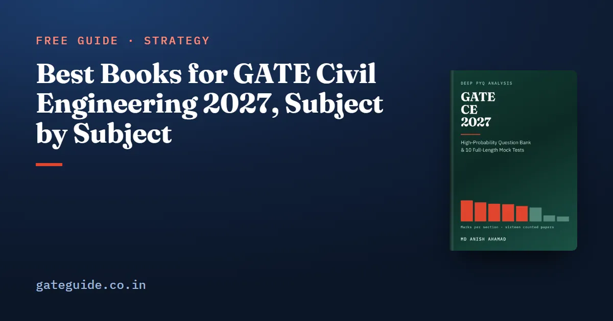

Best Books for GATE Civil Engineering 2027, Subject by Subject

If you want one reference text per subject for GATE Civil Engineering 2027, use the standard civil textbooks: Pillai and Menon for concrete, Subramanian for steel, Reddy or Hibbeler for structural analysis, Ranjan and Rao for soils, Modi and Seth with Subramanya for water resources, Peavy, Rowe and Tchobanoglous for environmental, Khanna, Justo and Veeraragavan for highways, and Punmia for surveying. Read them for method, then move to past papers. This guide gives the list, shows which chapters the 2027 syllabus no longer needs, and tells you where textbooks stop.
In this guide
- Key takeaways
- Three terms before the list
- The list at a glance
- How to split reading time by where the marks are
- How to read a textbook for GATE
- Structural Engineering
- Geotechnical and Water Resources Engineering
- Environmental, Transportation, Geomatics and Construction
- Where textbooks stop, and where the GATE CE 2027 book fits
- Quick revision
Key takeaways
- One primary textbook per subject is enough. A second book is for a doubt, not for a second full read.
- Structural Engineering is the largest technical section, 15.1 marks a paper on the mean; Geotechnical is next at 13.8.
- Skip textbook chapters on prestressed concrete, the flexibility method, plate girders, free vibration and dynamic pile formulae.
- For concrete and steel design, read the textbook alongside IS 456:2000 and IS 800:2007.
- Geomatics was rewritten for 2027, so read its syllabus before any surveying book or past paper.
- Textbooks teach the method; past papers teach how GATE asks it. You need both, in that order.
Three terms before the list
A primary text is the one book you read for a subject, chapter by chapter, with a pencil. A reference text is a second book you open only when the first explanation does not click. The past-paper layer is the set of GATE questions on a topic, which shows how the idea is examined.
The list below names standard textbooks used across Indian civil engineering courses. It gives author and title only. Editions and prices are left out because they change. Several of these books have gained co-authors or new titles in recent editions; any recent edition covers the GATE syllabus lines.
Before you buy anything, download the official CE syllabus from gate2027.iitm.ac.in. GATE Guide is an independent site with no connection to IIT Madras or the GATE office. Against 2026, the 2027 document lost nine phrases and gained twenty-nine. The GATE CE 2027 syllabus changes guide walks through them.
The list at a glance
| Syllabus subject | Primary text | Second text or companion |
|---|---|---|
| Engineering Mathematics | Erwin Kreyszig, Advanced Engineering Mathematics | B. S. Grewal, Higher Engineering Mathematics |
| Engineering and Solid Mechanics | Goodno and Gere, Mechanics of Materials | Beer and Johnston, Vector Mechanics for Engineers |
| Structural Analysis | C. S. Reddy, Basic Structural Analysis | R. C. Hibbeler, Structural Analysis |
| Concrete Structures | Pillai and Menon, Reinforced Concrete Design | IS 456:2000 |
| Steel Structures | N. Subramanian, Design of Steel Structures | IS 800:2007 |
| Geotechnical Engineering | Ranjan and Rao, Basic and Applied Soil Mechanics | Braja M. Das, Principles of Geotechnical Engineering |
| Fluid Mechanics and Hydraulics | Modi and Seth, Hydraulics and Fluid Mechanics Including Hydraulic Machines | K. Subramanya, Flow in Open Channels |
| Hydrology and Irrigation | K. Subramanya, Engineering Hydrology | S. K. Garg, Irrigation Engineering and Hydraulic Structures |
| Environmental Engineering | Peavy, Rowe and Tchobanoglous, Environmental Engineering | — |
| Transportation Engineering | Khanna, Justo and Veeraragavan, Highway Engineering | L. R. Kadiyali, Traffic Engineering and Transport Planning |
| Geomatics Engineering | Punmia, Jain and Jain, Surveying | — |
| Construction Materials and Management | M. S. Shetty, Concrete Technology | Punmia and Khandelwal, Project Planning and Control with PERT and CPM |
| General Aptitude | No textbook needed | Past GA sections, timed |
How to split reading time by where the marks are
The GATE CE 2027 book counted all sixteen CE papers from 2019 to 2026, Set 1 and Set 2 of each year, against their official keys. These are its means per paper:
| Section | Mean marks | Range |
|---|---|---|
| Structural Engineering | 15.1 | 7 |
| Geotechnical Engineering | 13.8 | 4 |
| Engineering Mathematics | 12.9 | 5 |
| Water Resources Engineering | 12.6 | 3 |
| Environmental Engineering | 11.1 | 5 |
| Transportation Engineering | 10.0 | 6 |
| Geomatics Engineering | 4.4 | 6 |
| Construction Materials and Management | 3.5 | 7 |
Range here is the gap between a section's highest and lowest paper. General Aptitude was exactly 15 marks in all sixteen. Another 1.6 marks a paper, on the mean, went to material the 2027 syllabus no longer names. The GATE CE subject-wise weightage guide explains each figure, and why the two sets matter.
A worked example
Suppose you have 100 hours for the first textbook pass over the technical sections. Share them in proportion to the mean marks, out of the 85 technical marks:
Structural Engineering gets hours, and Geotechnical about 16.2. Construction Materials and Management gets about 4.1: an evening or two, which is the right size for a section of short recall questions.
Trap: the structural hours must not go to prestressed concrete. Past papers show 14 marks of it across seven papers, and older textbooks give it full chapters, but the 2027 syllabus no longer names it.
How to read a textbook for GATE
- Map before you read. Print the syllabus and tick only the chapters that match a line.
- Read for procedures. Write each method as numbered steps: moment distribution, a flow net, a unit hydrograph, a BOD calculation, a superelevation design.
- Read design with the code open. Note each IS 456 or IS 800 clause your textbook uses. Keep the constants on one page; the GATE CE formula sheet is a model.
- Switch to past papers after the first pass. Don't finish a whole textbook before you touch a GATE question.
- Revise from your notes, not the book. One-page summaries are faster to revise than any chapter.
Remember: the syllabus is the chapter list. A textbook chapter earns your time only if it maps to a line in the 2027 document.
Structural Engineering
Goodno and Gere covers stress transformation, bending, torsion and buckling. Reddy or Hibbeler covers analysis. The 2027 syllabus newly names virtual work, Castigliano's second theorem, consistent deformations, influence lines with moving loads and the plastic analysis of portal frames. Several had already been examined under older wording, so read them properly. Skip the flexibility method and plate girders; both left the syllabus. So did free vibration of a single-degree-of-freedom system, 8 marks across four papers.
Pillai and Menon with IS 456:2000 covers limit state design of beams, slabs, columns and, newly named, isolated footings. Subramanian with IS 800:2007 covers tension and compression members, connections and plastic analysis. The structural formula sheet collects the relations.
Geotechnical and Water Resources Engineering
Ranjan and Rao covers index properties, permeability, consolidation, shear strength and foundations, with Das as the second text. Dynamic pile formulae left the syllabus; only static formulae remain. Sheet piles and ground improvement are newly named.
Water Resources is three subjects under one heading. Modi and Seth covers fluid mechanics, and Subramanya covers open channels and hydrology. Newly named are prismatic and mobile channels, rapidly varied flow, flow past sharp-crested weirs and river training structures. Garg covers irrigation, canals and dams.
Environmental, Transportation, Geomatics and Construction
Peavy, Rowe and Tchobanoglous covers water and wastewater treatment, air pollution and solid waste. Tertiary treatment and landfill basics are newly named.
Khanna, Justo and Veeraragavan covers highway geometry and pavements. Kadiyali covers traffic engineering and the four-step travel demand model. That model is new for 2027 and drew zero marks in all 1,040 counted questions, so the textbook is your only guide to it.
Geomatics was rewritten. Remote sensing and GIS are gone; GNSS, map projections, cadastral surveying and digital photogrammetry are new. Check that your edition of Punmia has those chapters before relying on it.
In one line: in Geomatics, read the 2027 syllabus first, then the textbook, and the old papers last.
Shetty covers cement hydration and admixtures, and Punmia and Khandelwal covers AOA and AON networks and project monitoring.
Where textbooks stop, and where the GATE CE 2027 book fits
A textbook explains Terzaghi's bearing capacity once. It will not show you how GATE has framed it across sixteen papers, or which term the water table changes. That layer comes from past papers, studied topic by topic.
The GATE CE 2027 book is built for that layer. It has 623 pages and 924 questions written for it, each with a worked solution: 274 in nine subject chapters and 650 in 10 full mock tests. It adds the hundred questions to work first, a what-not-to-skip chapter, a staged revision plan and a last-minute sheet of formulae and code constants. It does not replace the textbooks above. It tells you which topics inside them GATE keeps returning to. General Aptitude needs practice rather than a book; the GATE General Aptitude guide covers the method.
Quick revision
- One primary textbook per subject; a second only for doubts.
- Map every chapter to a line of the 2027 CE syllabus before reading it.
- Give Structural and Geotechnical the most hours: 15.1 and 13.8 marks on the mean.
- Skip prestressed concrete, the flexibility method, plate girders, free vibration and dynamic pile formulae.
- Read concrete and steel design with IS 456:2000 and IS 800:2007 open.
- Read the four-step travel demand model from the textbook; no past paper covers it.
- In Geomatics, check your edition covers GNSS, map projections and photogrammetry.
- Switch to topic-wise past papers right after each first pass.
Frequently asked questions
Which is the best book for GATE Civil Engineering preparation?
No single book covers the whole CE paper well. Use one standard textbook per subject, such as Pillai and Menon for concrete, Subramanian for steel, Ranjan and Rao for soil mechanics, Subramanya for open channels and hydrology, and Khanna, Justo and Veeraragavan for highways. Read only the chapters the official syllabus names, then move to past papers topic by topic.
Should I study prestressed concrete for GATE CE 2027?
Not as a priority. The 2027 Concrete Structures line no longer names prestressed concrete beams, though it drew 14 marks across seven of the sixteen counted papers from 2019 to 2026. Skip those textbook chapters. There is a fair counter-argument, since 2027 still names design and detailing of beams, but the topic is no longer named on its own.
Do I need IS codes along with textbooks for GATE CE?
Yes, for the design subjects. Concrete design questions follow IS 456:2000 and steel design questions follow IS 800:2007, and a good textbook teaches each clause through worked design. Read the code clauses your textbook cites alongside it, and keep the constants on a one-page sheet for revision rather than rereading the whole code.
Which book should I use for Transportation Planning in GATE CE 2027?
Kadiyali, Traffic Engineering and Transport Planning, covers travel demand modelling. The 2027 syllabus newly names four-step modelling, meaning trip generation, trip distribution, mode choice and traffic assignment, and it has drawn zero marks in all 1,040 counted questions. There is no past-paper pattern to learn from, so read the textbook method carefully.
Are textbooks enough for GATE CE or do I need previous year papers?
You need both, in that order. A textbook builds the method, such as a moment distribution table or a consolidation settlement calculation. Past papers show which forms GATE repeats. Civil sets two different papers a year, so the sixteen papers from 2019 to 2026 are a large practice set; work them topic by topic after each textbook pass.
Sources
- GATE 2027 official website (IIT Madras)
- GATE 2027 CE syllabus (official PDF)
- Kreyszig, Advanced Engineering Mathematics (Wiley)
- Grewal, Higher Engineering Mathematics (Khanna Publishers)
- Goodno and Gere, Mechanics of Materials (Cengage)
- Beer and Johnston, Vector Mechanics for Engineers (McGraw Hill)
- Reddy, Basic Structural Analysis (library record)
- Hibbeler, Structural Analysis (Pearson India)
- Pillai and Menon, Reinforced Concrete Design (McGraw Hill India)
- Subramanian, Design of Steel Structures (Oxford University Press India)
- IS 456:2000, Plain and Reinforced Concrete, Code of Practice (BIS)
- IS 800:2007, General Construction in Steel, Code of Practice (public scan)
- Ranjan and Rao, Basic and Applied Soil Mechanics (WorldCat)
- Das, Principles of Geotechnical Engineering (Cengage)
- Modi and Seth, Hydraulics and Fluid Mechanics Including Hydraulic Machines (library record)
- Subramanya, Flow in Open Channels (McGraw Hill India)
- Subramanya, Engineering Hydrology (McGraw Hill India)
- Garg, Irrigation Engineering and Hydraulic Structures (Khanna Publishers)
- Peavy, Rowe and Tchobanoglous, Environmental Engineering (CiNii record)
- Khanna, Justo and Veeraragavan, Highway Engineering (Open Library)
- Kadiyali, Traffic Engineering and Transport Planning (Khanna Publishers)
- Punmia, Jain and Jain, Surveying (Laxmi Publications)
- Shetty, Concrete Technology, Theory and Practice (S. Chand)
- Punmia and Khandelwal, Project Planning and Control with PERT and CPM (Laxmi Publications)
Dates, fees and the syllabus are set by the GATE 2027 organising institute and can change. Always confirm at gate2027.iitm.ac.in.